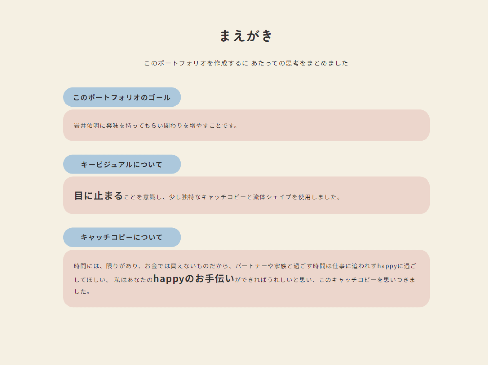

このポートフォリオ
ポートフォリオの説明や
頑張ったところ
- ペルソナについて
- Webデザインの仕事をバリバリこなしている、休みと癒しがほしい28歳女性をイメージして作成しました。
- デザインについて
-
常に、
意味のあるデザインなのか
わかりやすいかということを自問自答しながら作成しました。
やさしい雰囲気を出したかったので、全体的にまるみのある形や、パステルカラーを使用しました。
海、砂浜をイメージさせるようなデザインで、さわやかさも感じてもらえたら嬉しいです。 - 各Sectionについて
-
Section名は、できるだけ日本語を使い、ひとめ見ただけでイメージができるようなわかりやすい表現にしています。
また、私の思考をよくわかってもらいたいので「まえがき」のSectionを設けました。他とは違う、私独自のサイトを作成したいという思いもあります。 - わたしについて
-
デスクトップではflexboxプロパティーを使用して、六角形を表現した自己紹介ページを作成しました。今回はflexboxやネガティブマージンを使用し、表現してみました。positionを使用する方が一般的だったと思うので、六角形を作成する際には挑戦してみたいと思います。

- つながりませんか
-
関わりを増やすという目的を達成するため、ツイッター(X)のリンクを貼りました。お問い合わせフォームだと、形式ばってしまい、コンタクトを取るのをためらってしまう場合があるかもしれませんが、
アイコンを押すだけで、DMでのやりとりや、リプライでのやり取りが気軽にできるため、この方法を採用しました。
- 頑張ったところ
-
clampを使って、フォントサイズやwidth、paddingなどの大きさを指定したことです。clampを多用した結果、使いすぎはよくないなと学びました。
また、「わたしについて」のセクションで、スマホサイズとデスクトップサイズで表示するデザインを大幅にかえたことです。六角形というあまり見ないデザインに挑戦してみました。
Javascriptでは、ハンバーガーメニュー、スムーススクロール、フェードインを実装しました。